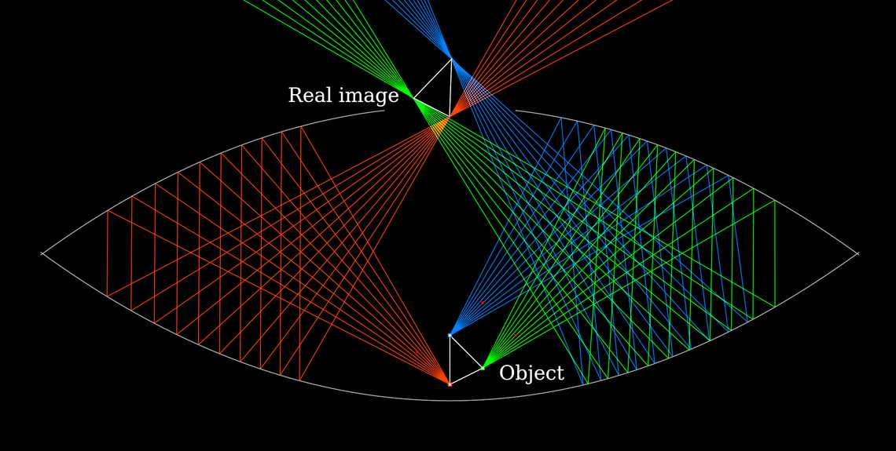

Contributor: Mario Petitclerc
A mirascope is a fascinating optical illusion device that uses two opposing parabolic mirrors to create the illusion of a three-dimensional floating image. The device consists of:
When light from the object reflects between the mirrors, it is redirected in such a way that it appears as a lifelike, three-dimensional image floating above the surface of the mirascope. The illusion is so convincing that people often try to touch the image, only to find there's nothing there.
Mirascopes are popular in science demonstrations, toys, and novelty items to illustrate the principles of optics, reflection, and the behavior of light.
